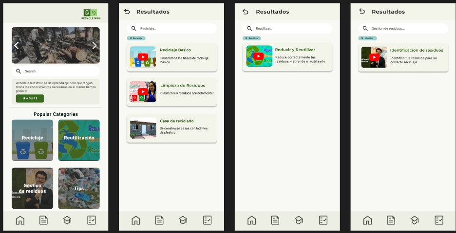
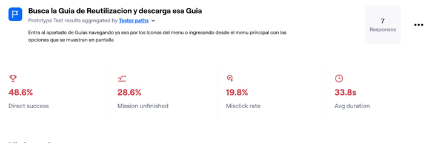
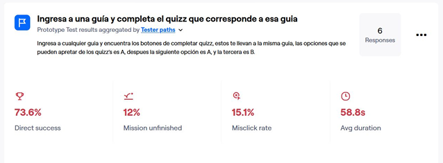
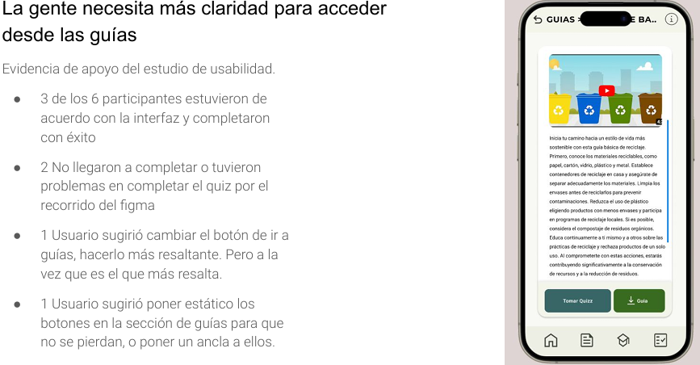
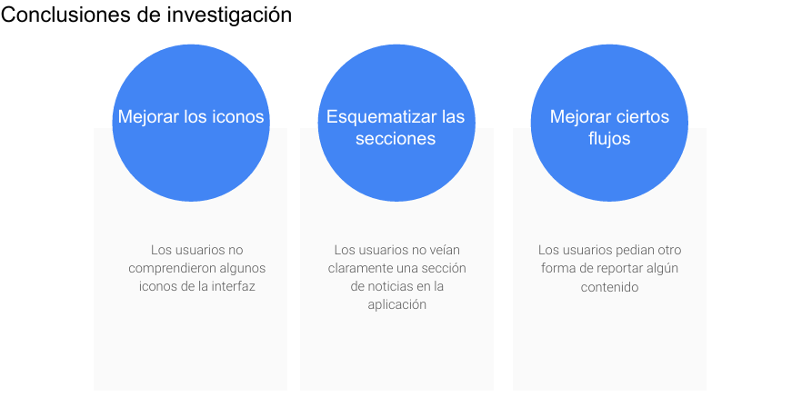

Estado de los Prototipos
Se agregaron las imágenes faltantes así como todas las funcionalidades a los prototipos, además de modificaciones basandonos en sugerencias anteriores llevados a cabo en nuestras evaluaciones.

Elección y Justificación de la Herramienta
Seleccionamos la herramienta Maze por su facilidad de uso y el feedback detallado que proporciona sobre las pruebas de los usuarios.
Diseño de Tareas
- ¿Pueden los usuarios descargar una guía específica?
- ¿Cuánto tiempo tardan los usuarios en descargar una guía?
- ¿Pueden los usuarios reportar alguna noticia por baja calidad?
- ¿Pueden los usuarios completar el quiz de una guía?
Selección y Descripción del Grupo de Usuarios
Seleccionamos 3 usuarios con diferentes características (edades, conocimiento), abarcando un rango de 18 a 36 años.
Análisis de Datos
Comentarios Cualitativos
- 3 de 7 personas encontraron la interfaz intuitiva.
- 3 de 7 personas tuvieron problemas para entender los iconos y la navegación.
- 1 de 7 personas indicó que no recibió feedback adecuado.
Resultados de Tareas
- Descargar guía: 5 de 6 participantes completaron exitosamente. 
- Quiz de guía: 3 de 6 participantes completaron exitosamente. 
Recomendaciones
Conclusión
El estudio de usabilidad proporcionó valiosos insights para refinar y mejorar la plataforma "Recycle Now".
